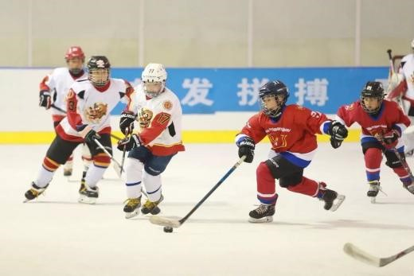
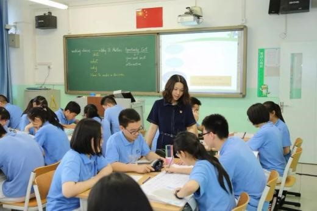
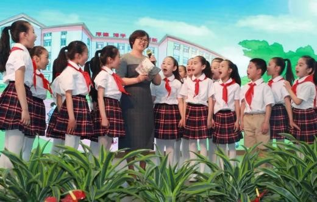

东城区教育大会召开，亮出“1+5”任务单~
来源：北京东城
今天上午，东城区教育大会在东城区少年宫召开。北京市委教工委领导出席会议并讲话，东城区委书记夏林茂作主旨报告，大会由区委副书记、区长金晖主持。
东城区委、区政府向国家总督学陶西平颁发“教育改革与发展首席专家顾问”聘书。早前，区教工委、区教委聘请党建研究、教育理论、教育评价、教育信息化等领域近30位专家学者组建了新一届东城区教育改革发展专家咨询委员会。今后，他们将为东城教育新发展助力。
会上，夏林茂以《坚持优质均衡发展 举全区之力 建设教育现代化示范区》为题作主旨报告，报告从四个方面诠释了东城区作为首都功能核心区，在北京及国家发展中肩负着新的重要使命，要以“更高标准”、“更高质量”、“更高自觉”，举全区之力建设教育现代化示范区的决心。
大会现场，举全区之力为教育改革发展办实事的折子工程正式发布，涉及全区40余个委办局、街道的13项折子，包含保障教师队伍人员充足、搭建中小学师生国际交流与合作平台等多方面内容。
区委组织部、区财政局、北新桥街道、中国社科院负责人相继发言，从所在领域就协同、支持教育发展提出具体合作方向、重点举措与实施路径。北京市第一幼儿园、史家教育集团、广渠门中学校长分别进行发言，总结了多年来所取得的办学成果，并结合学校特点特色阐述了面向未来的育人计划。
下午，与会人员进行了分组讨论。在随后召开的会议上，北京汇文中学、北京市第一六六中学、北京第一师范学校附属小学、东城区教师研修中心、东城区教育研修学院代表进行了交流发言。

会上，东城区与中国教育学会签订了《共建教育现代化实验区合作协议》，与北师大签订《东城区教育委员会北京师范大学“双名工程理论导师”项目合作协议书》，与首师大签订《首都师范大学与东城区教育委员会共建教育实践基地协议书》。区委副书记、区政协主席宋铁健出席会议。
亮出“1+5”任务单
建设教育现代化示范区
会上，东城区列出了“1+5”的目标任务单，明确了加快推进教育现代化，建设“东城品格、首都标准、中国特色、世界水平”教育现代化示范区的新目标和五项重点任务。

为了实现这一目标，东城列出了一连串时间节点——
近期，到2020年，全面实现“十三五”发展目标，到2022年，率先总体实现现代化；
中期，到2035年，率先实现高质量教育现代化，率先成为学习强区；
远期，到2049年，率先达到发达国家前列水平，全面实现教育现代化，成为更高质量的学习强区。
党支部设在教育教学一线
东城区将坚持正确办学方向，加强党组织规范化建设。将党组织的机构设置、工作任务等纳入学校管理体系，将支部设在年级组、教研组等教育教学一线。
此外，东城区还将实施思政课教师“三个一”工程，即3年内，思政课教师全员参加1次“思政教师走进高校”党性思政教育专题研修、1次综合社会实践考察、1次专项思政学习培训。
建立一批青少年素质教育基地
反对各种“抢跑”
东城区将统筹优化全区教育资源，携手建立一批青少年素质教育基地，开辟多条具有“东城特点”的教育活动实践路线图。
例如，作为五四运动发源地，东城区有着丰富的历史文化资源和红色教育土壤，区委宣传部、区文化和旅游局等多个部门将共绘红色基因传承教育路线图，将爱国主义教育基地、革命遗址、纪念馆等场所纳入教育资源之中。此外，还将坚持“五育并举”，开辟创新人才培养基地路线图、体质健康运动路线图、高雅艺术美育活动路线图和劳动实践活动路线图等。
同时，东城区将加强“减负”策略研究，使家庭、学校、社会协同推进，减少不必要的课业负担，反对各种形式的“抢跑”，让孩子阳光、自信、愉悦地成长。
东城区将积极推广“一校一品”、“一校多品”发展模式，让每个孩子都能掌握2项以上体育技能。助力冬奥推动“冰雪运动”，100%覆盖全区学校、学生。为提供更多运动场地，东城区将通过共享区域内各级各类运动场所，缓解学校运动场地不足的迫切需求，并利用“疏整促”腾出的空间，优先满足教育需求，支持运动场地建设。
东城区还将保障学生在基础教育阶段掌握1项艺术特长，深入开展学生艺术素质测评。全区各类型艺术活动场所免费向学生开放，全区“戏剧类”艺术场所也将免费向教育开放。
此外，东城区拟出台《东城区中小学生劳动教育指导纲要》，建设区域国防安全教育、军事训练、农事实践、职业体验等劳动教育基地，让学生通过日常家务、手工制作、非遗传承、学工学农、社会实践、志愿服务等多种方式加强劳动教育。
优质资源覆盖到每个街道、社区
未来，东城区将继续以学区制教育综合改革为载体，实现优质教育品牌资源覆盖到区域里的每一个街道、社区，义务教育专任教师高学历人员比例居全国领先地位，高级职称教师、市区骨干教师、知名教师覆盖到区域内的每一所学校。同时，东城区将持续推进“体质·健康2020”工程、“文化·传承2030”工程，促进孩子们的可持续发展。
学前教育将以落实“三年行动计划”为重点，增加学位供给，加快发展普惠优质学前教育。高中教育则以“创一流、创特色”为驱动，建设一批特色优质、示范性强的高中校。
三个全覆盖打造未来学校
近日，东城区成为教育部首批国家“智慧教育示范区”之一。
未来，东城区将逐步建成现代化、智慧化、学习型的未来学校，率先实现教学应用覆盖全体教师、学习应用覆盖全体适龄学生、数字校园建设覆盖全体学校。
借力云计算、大数据等信息技术，东城区将探索“人工智能+教育”，研究智慧化课堂环境构成，探索青少年感受、体验、学习人工智能知识的课程实施路径，形成人工智能资源库，开展人工智能社会体验实践活动。
值得一提的是，区教师研修中心申报了国家级课题“小学人工智能学习资源的开发与实践”，确定了黑芝麻胡同小学、培新小学等6所小学为首批实验校，并引入由各大院校与知名企业的专家组成的团队进行指导。线上、线下多空间的“双课堂”教育等多样化教学模式应用与实践研究，将于今年启动。
此外，东城区还将建立学生健康、学业成绩、个性发展、社会实践等综合全息数据档案和教师全息数据档案。教育教学的智能测评和诊断也将逐步实现，支持教学示范、模拟教学和虚拟教研等促进教师发展模式。
远程教学等先进信息技术手段，还将帮助东城更便捷、更有效地连接崇礼、阿尔山、通州、雄安等地区，向它们输送优质教育资源。
青年教师全员纳入“成长营”
预计到2022年，东城区力争培养数十名在全市、全国有影响力的名校长、名教师，培养百名左右教育拔尖人才，千名左右骨干教师。
东城区还将构建“1+3+N”教师教育培训体系。“1”是指师德师风建设一条主线；“3”是指新任教师学区培训基地、骨干教师境内高校培训基地和学科实践基地；“N”是指分岗、分层、分类的培训课程体系和管理体系，满足教师专业发展需求。
“双名工程”作为东城区一项教育品牌，在原有“名教师 ”、“名校长”工作室基础上延展，将新建“名教研员”、“名学科”工作室，经过3至5年，重点培养一批能够积极发挥引领与辐射作用的名教研员和优秀学科教师。建立区级、学区、学校三个层级“班主任”工作室，纳入“双名工程”管理。计划区级骨干教师数量将增加到专任教师的20%。
此外，东城区还计划将35周岁以下青年教师全员纳入“成长营”，建立青年教师成长档案，全过程记录青年教师的教育教学历程和成长轨迹。